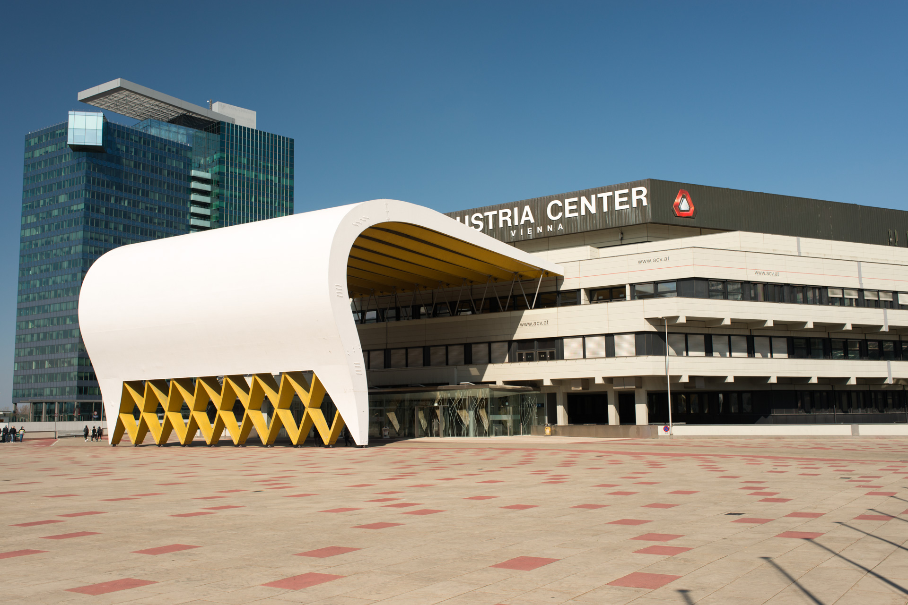
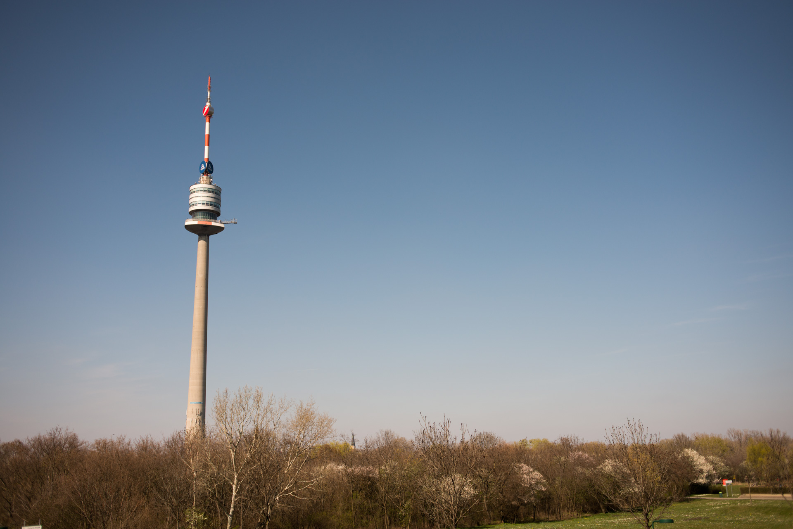
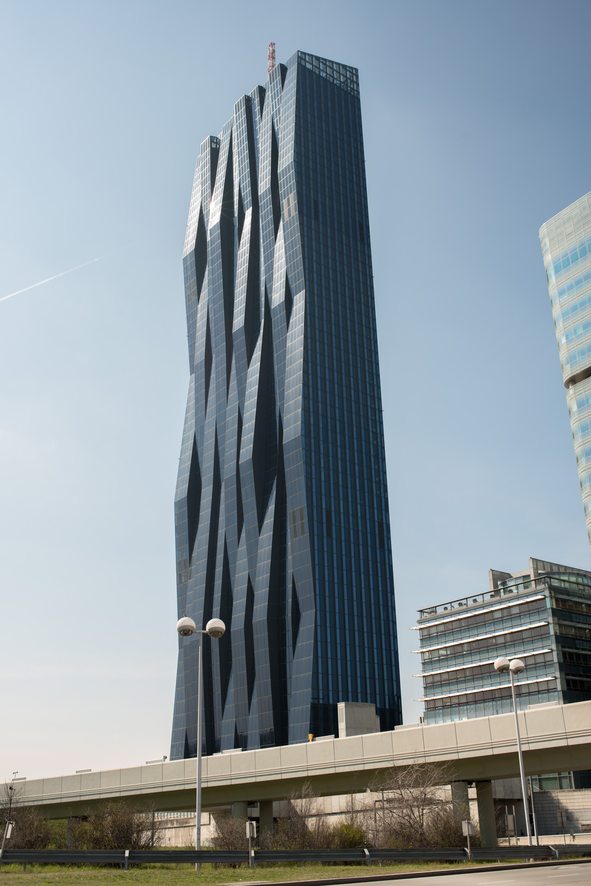

Vienna International Center

Das Vienna International Centre wurde 1973–1979 von der Republik Österreich und der Stadt Wien errichtet. Österreich hatte den Vereinten Nationen (UNO) 1967 ein solches Internationales Zentrum angeboten, es ist Sitz des United Nations Office at Vienna (UNOV) und anderer internationaler Organisationen. Es wird den Vereinten Nationen zu einem symbolischen Pachtzins von 7 Eurocent (bis 2001: 1 Schilling) pro Jahr für 99 Jahre vermietet. <mehr>Donauturm

Der Donauturm ist ein Aussichtsturm inmitten des Donauparks im 22. Wiener Gemeindebezirk Donaustadt. Er wurde von 1962 bis 1964 anlässlich der Wiener Internationalen Gartenschau errichtet. Der Turm beherbergt neben einem Restaurant ein Café und erfüllt seit den 1990er Jahren auch andere Funktionen, etwa als Sendestation und Bungee-Jumping-Plattform. Der Donauturm ist eines der Wahrzeichen Wiens, ein weithin sichtbarer Werbeträger und ein beliebtes Ausflugsziel. <mehr>DC-Towers

Die DC Towers (eigentlich Donau City Towers) sind zwei von dem französischen Architekten Dominique Perrault in der Wiener Donaucity geplante und teilweise fertiggestellte Wolkenkratzer. Das erste der beiden Gebäude, der DC Tower 1, wurde am 26. Februar 2014 eröffnet,[3] der DC Tower 2 befindet sich noch in der Planungsphase. Bereits Anfang der 1990er-Jahre gab es für den Standort in der Donau City erste Bebauungskonzepte, die aber allesamt wieder verworfen wurden. Im Jahr 2002 ließ die WED (Wiener Entwicklungsgesellschaft für den Donauraum AG) dann einen internationalen Gestaltungswettbewerb für diesen letzten zu entwickelnden Abschnitt ausschreiben. <mehr>